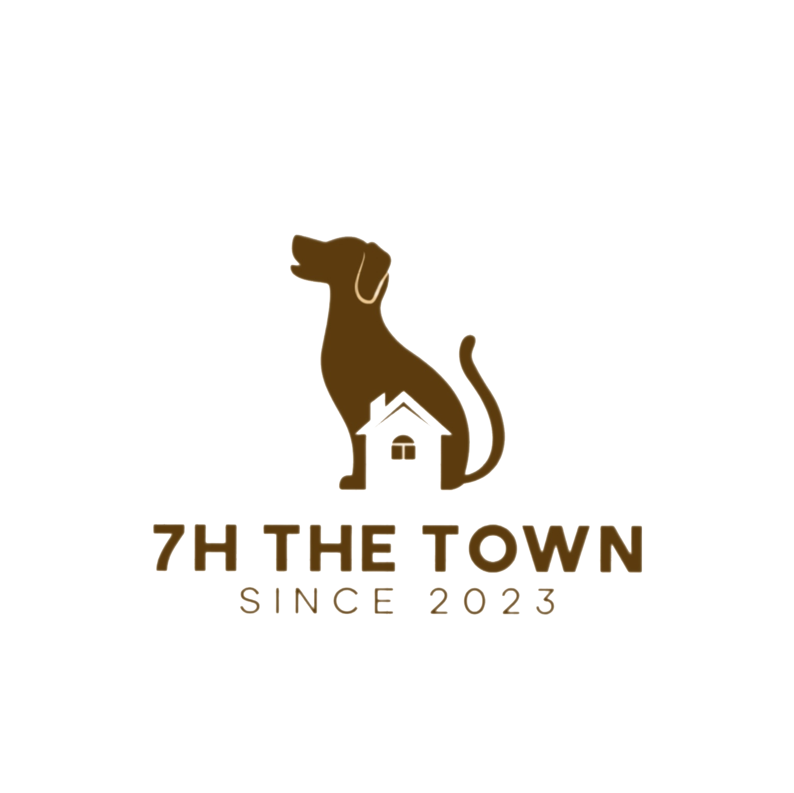

Get The Pet!
후원 페이지
게시판 페이지
고객 센터 페이지
로그인
회원가입
마이페이지
현재 전세계의 유기동물 수
218,481,685 마리
유기동물과 함께하는 게더타운
게더타운의 간단한 소개글
218,481,685 듣기만 하여도 가슴이 설레는 말이다 청춘!
너의 두손을 가슴에 대고 물방아 같은 심장의 고동을 들어
보라 청춘의 피는 끓는다 끓는 피에 뛰노는 심장은 거선의
기관과 같이 힘있다 이것이다 인류의 역사를 꾸며내려온